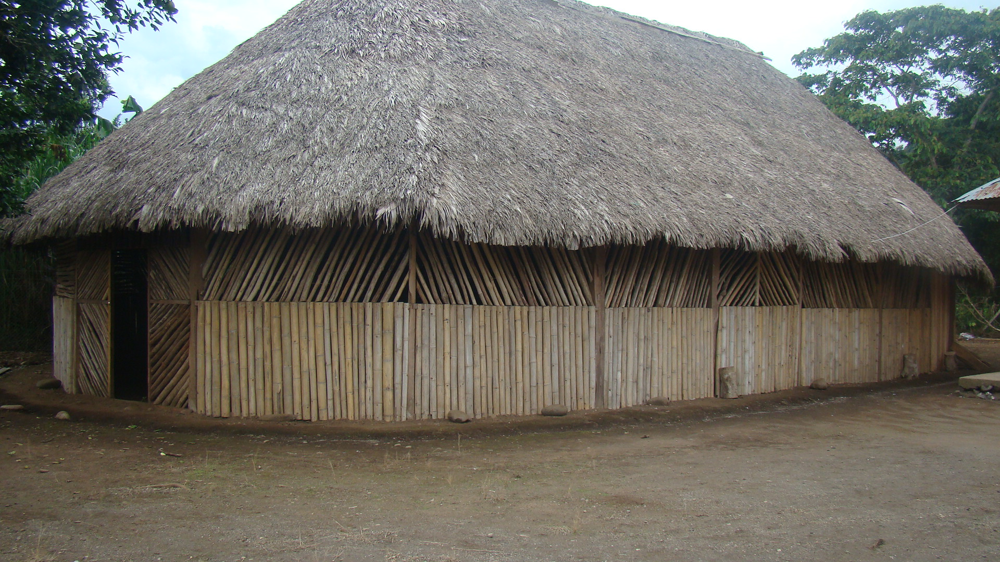
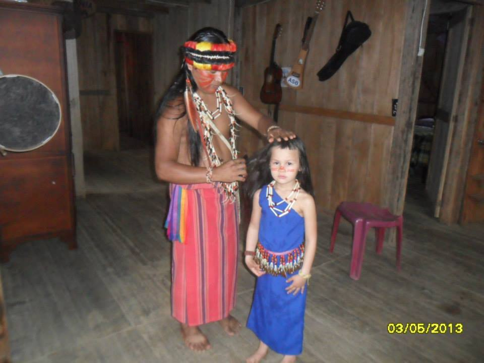

Oreientierung
Oben ist Die Karte von Equador zu sehen. Das Land befindet sich auf der Südameriakanischen
Platte. Es grenzt an die Länder Columbien, Peru und Chile, die Küste grenzt Südpazifischen Ozean.
1531-1534 wurde Equador von den Spaniern erobert. Sie Führten die spanisch Sprache ein.
Jedoch leben dort auch heute noch viele Einheimische und einer dieser Stämme sind die Shuar.
Uhrsprung und Siedlungsgebiete
Die Shuar sind ein indigenes Volk im Amazonastiefland Ecuadors sowie auch Nordwest-Perus. Ihr Hauptsiedlungsgebiet liegt im südlichen Ecuador, zwischen den Anden und den Flüssen Río Pastaza, Upano und Zamora. Die Shuar leben traditionell in kleinen Dörfern die meistens nur aus ihrer Familie bestehen. Diese liegen im tropischen Regenwald teilweise grezen diese an eine grosse Strasse, manchmal liegen sie aber auch tief im Uhrwald drinnen. Für die Bewohnern ist es deswegen oft schwehr sich unter die Gesellschaft zu mischen und eine gute Ausbildung zu bekommen.Die genaue Herkunft der Shuar ist unklar. Wahrscheinlich entstanden sie aus der Verschmelzung von Arawak-sprachigen Amazonasbewohnern und Gruppen aus dem Andenraum. Ursprünglich gehörten sie wohl zu den Palta, die vor den Inka nach Osten auswichen.
Traditionelles Casa Shuar
Vater mit Tochter in der traditionellen Tracht
more on our socialmedia platforms: